Opening the Velopharyngeal Port during vowel production to allow nasal airflow
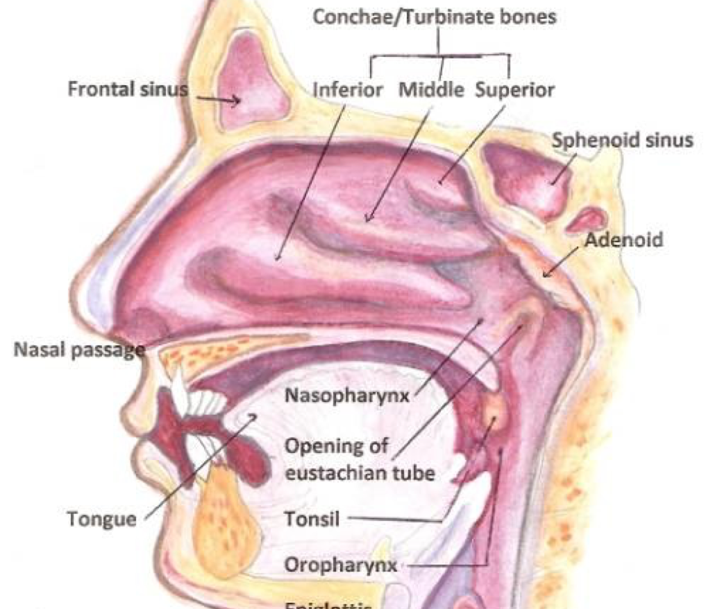
|
‘Pats’ [pæts] |
‘Pants’ [pæ̃nts] |
|---|
|
‘beautiful’ [bo] |
‘good’ [bõ] |
|---|
| ### Humans are OK with vowel nasality |
| * … Yet it’s complicated for Linguists… |
“…To do my experiment I will need to find the point where nasality starts in a vowel, and I am struggling with that a bit.
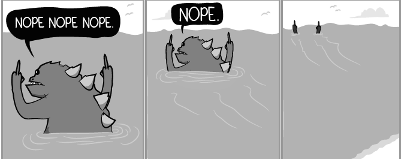
Our current methods just aren’t that good…
| ### A1-P0: The Reigning Champion |
| 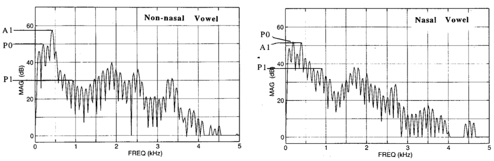 |
| * “Nasality makes the vowel formants drop in power, and introduces a nasal resonance. Compare the two.” |
“CVN words should have increasing nasality through the vowel”
(A1-P0 should drop)
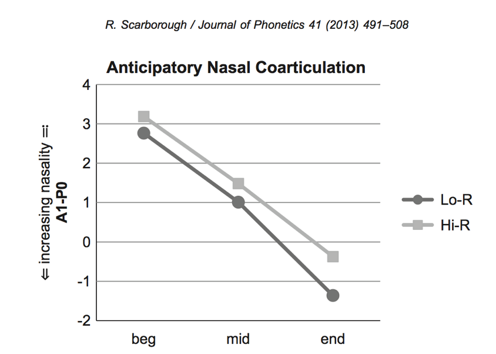
Going from known-oral to known-nasal parts of vowels, nasality should always go up.

Listeners clearly can make judgements about nasality in individual vowels*, but linguists can’t.
(c.f. Lahiri and Marslen-Wilson 1991, Beddor and Krakow 1999, Beddor 2013, Kingston and Macmillin 1995, Macmillin et al 1999)


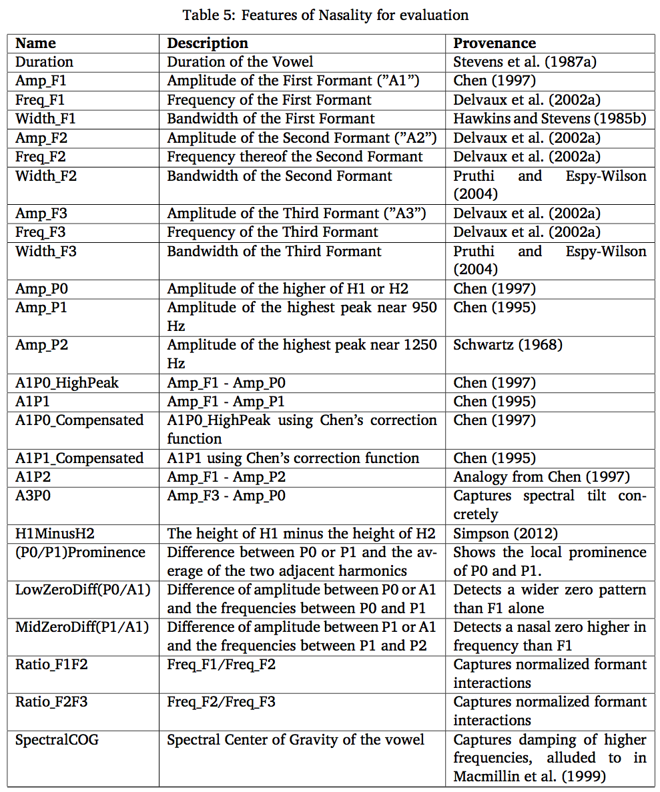
Use a bunch of linear fixed-effects models
Perceptual testing using humans is inefficient and expensive.


“I’m rooting for the pats in the Super Bowl”
“One should likely wear pants when teaching”
“Uh, it just sounded like”pants”, bro.”
“Well, that one sounded more nasally.”
“Can I get my $6 already?”

Humans hear a signal, find acoustical features, and then make judgements.
Machines can be given features, and then make judgements too.
Their decisions are easier to quantify.
They’ll tell you how they made the decision they did.
They live in my apartment!
They have no idea what “pants” are, and don’t watch football.
The task is very hard
I don’t really care about future classification
The consequences of any individual miss are really low
I want to learn everything I can about how the classification was done
I have to make ~35 different models, so it has to batch well
Before we get to RandomForests, we need to talk about…
Let’s pretend to be classifiers!
“I’m looking at a bird. What kind of bird is it?”
One Approach:
By asking enough questions looking at a training set, you’d end up with a Decision Tree.
Classification is just “following the tree”
Ask a question, then ask a different question based on the first one, then ask another….
Great for simple classification tasks
Not so great with relatively little data
Don’t tell you about feature importance
3-500) Do that 498 more times
Let’s make a RandomForest!
RandomForests can calculate which features were most useful for classification!
Reclassify, but shuffle the data for one feature per run
This is awesome!
They work well with small and large datasets
They’re transparent!
… but they’re not the most accurate algorithms out there
… and they’re a bit… odd sometimes.
So we should also use a model which is more accurate
Back to the waterfowl!
You are now recieving texts with bill length and body-length measurements for birds
The question is “Swan, or Duck?”
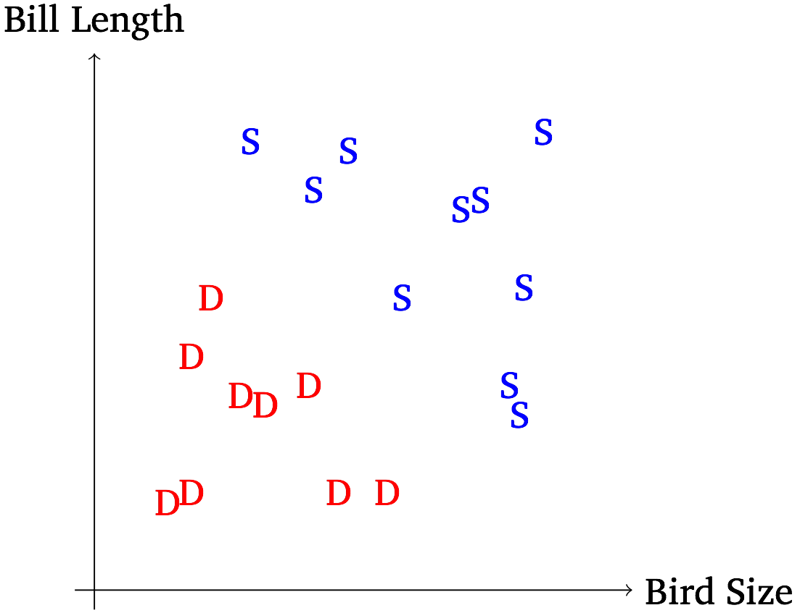
Look at all the data in an n dimensional space
Try to find a hyperplane with the best separation
This hyperplane is delineated by the “support vectors”
Classification is just seeing where the new data is relative to that line
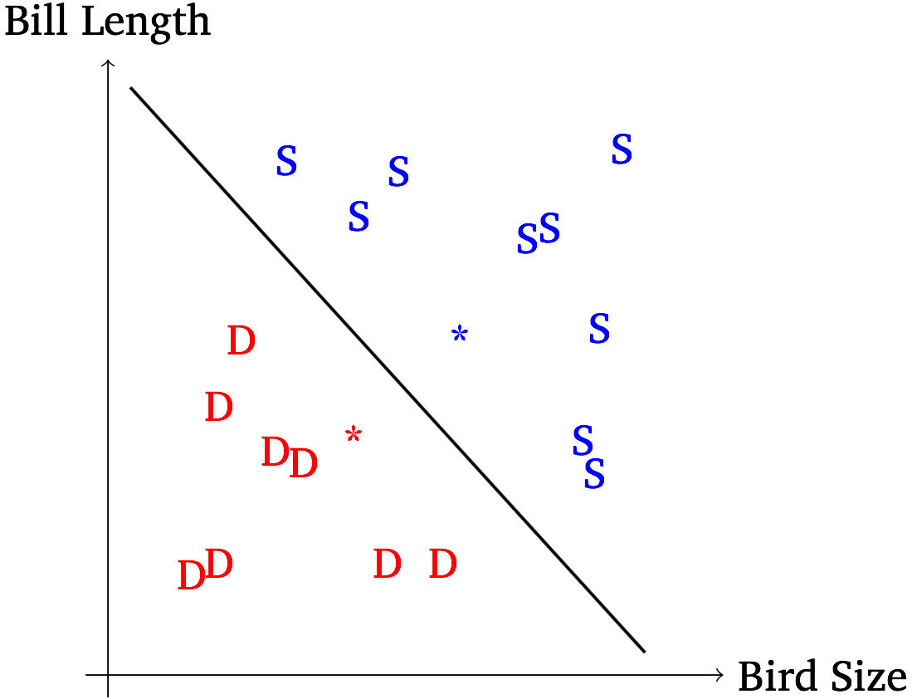
| 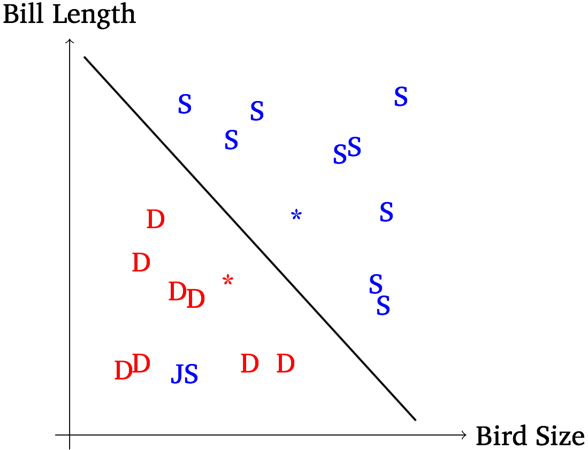 |
The parameter “C” controls how much an error “costs”.
Higher values for C mean the model will contort itself to avoid misclassifications
Low values for C mean that it’ll capture the general pattern, even it misses a fair number of issues.
Tuning the C Parameter is important!
| ### The “Kernel Trick” |
| * The default SVM creates a feature x weight matrix * New items are evaluated by class similarity based on (feature*weight) |
| * You can do a “kernel” trick, and specify another similarity function * There are tons of these out there. Radial (RBF) is very common. |
This has two consequences!
A Kernelized SVM compares each new item to every item in the training set, one-by-one.
A new item which is really similar to an old one (according to your kernel) will be classified similarly
Kernelized SVMs are very exemplar-ish
Once the model has become kernelized, the classification space gets really weird
You’re no longer looking at linear relationships
This means that a hyperplane can cut the data “non-linearly”
SVMs are really accurate
They’re a “gold standard” for machine learning
When Kernelized, they’re really flexible, too!
RandomForests for transparency
SVMs for accuracy
Are any features good enough on their own to allow nasal perception?
Using both SVMs and RandomForests.
Using 10-fold cross-validation
116 models, one per feature per algorithm per language
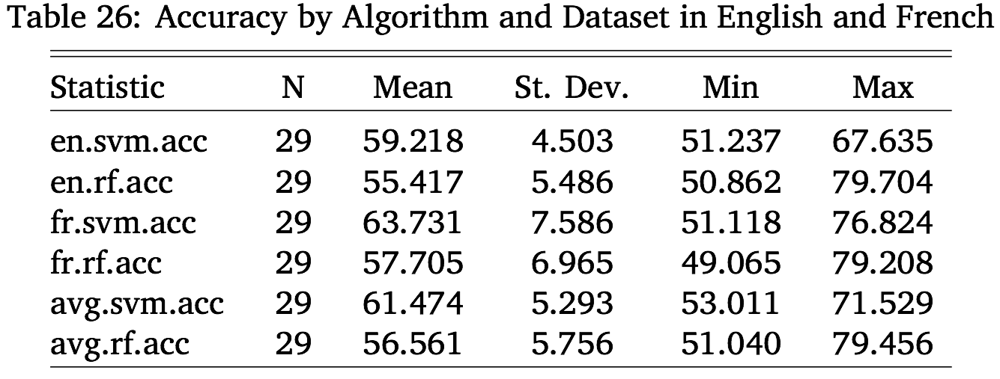
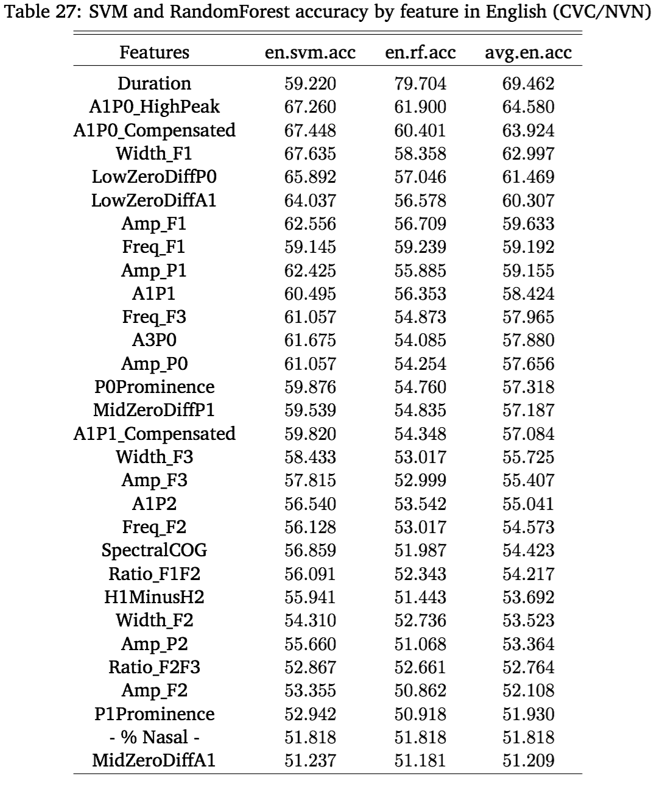
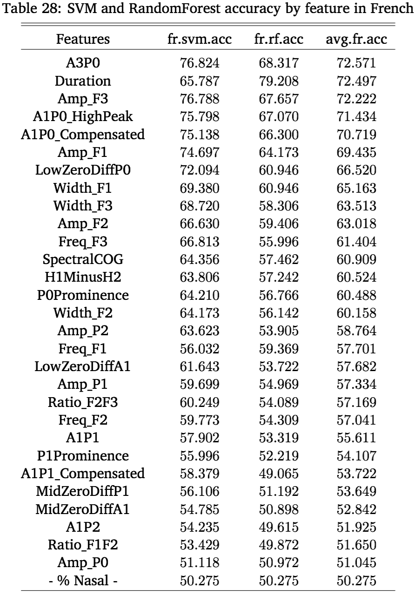
So, none of the features are good enough on their own.
Run an all-features-included RandomForest
Compare the Importance Values for each feature
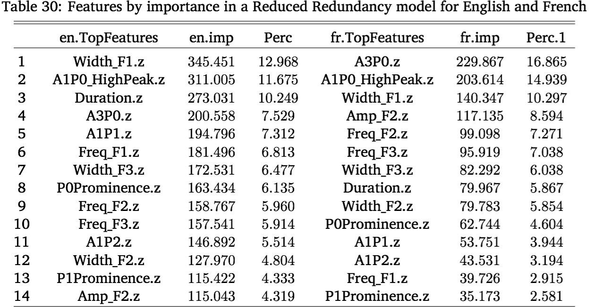
I wonder if all these important features would perform well as a group…?
SVMs and RandomForests can do very well with massive featuresets
Million+ feature sets are not uncommon
29 features is not a problem
| ### Multi-feature modeling |
| * Pick six a priori feature groupings * There are 20,030,007 other possible 10 feature groupings out of 29 |
| * Test them with SVMs and RandomForests |
| * Compare accuracy in light of the number of features * More features will usually mean better accuracy |
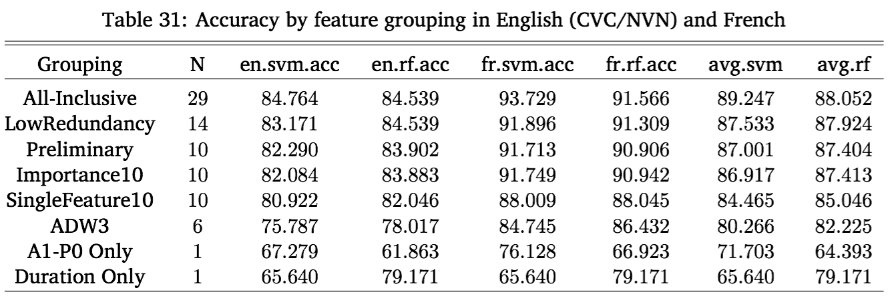
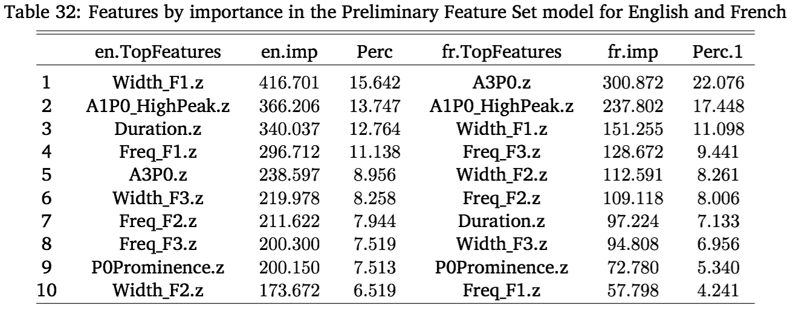
What happens if you train a model on English, then test it on French?
If they’re fundamentally similar, it won’t matter!
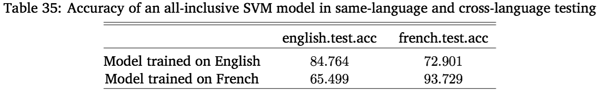

What features are best for predicting nasality in English and French
How important they are, when combined
Which feature group is best for predicting nasality
Which features to test with humans!
… and most importantly
(Now, I just have to test the humans)
(… and analyze that data)
(… and write it up)
(… then defend it)
(… on March 18th)

Machine learning isn’t just useful for making predictons!
Not all algorithms work for every task
Machine learning can be a decent perceptual proxy for humans
Machine learning is useful for things that aren’t NLP
Nasality is pretty much magic.